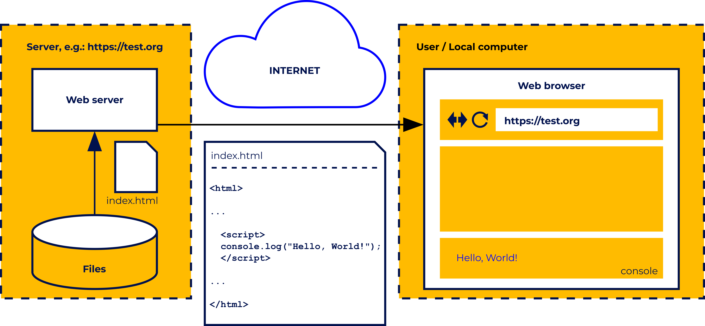
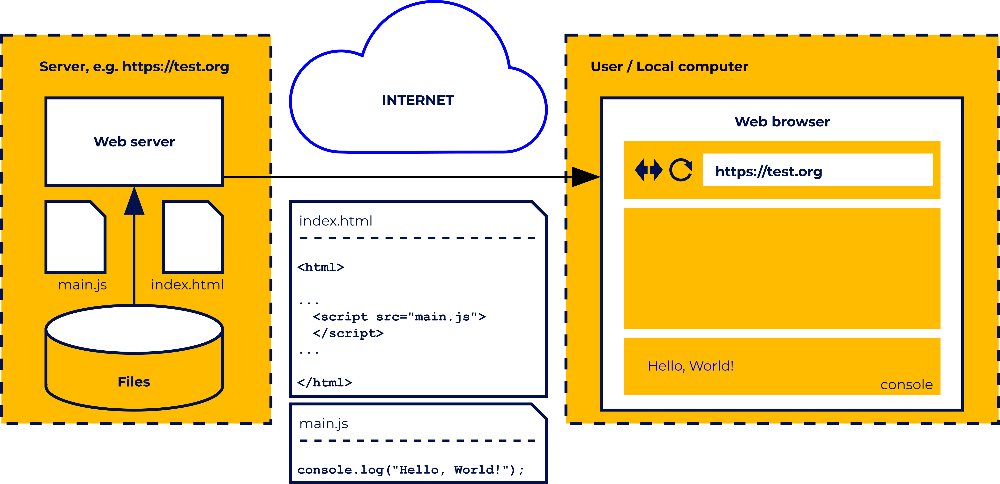
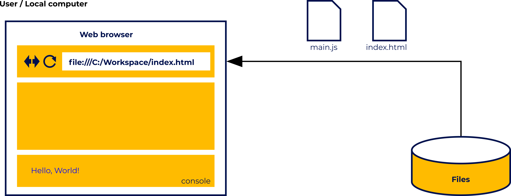

JavaScript Basics
1. Introduction
1.1 Introduction to JavaScript and Computer Programming
About JavaScript (how to communicate with the computer, what is JS, advantages and limitations of JS, where is JS used today)
Setting up the programming environment (development tools, online development environment, local development
environment)
First JS program – Hello, World! (a few words about HTML, how to run your JavaScript code, executing the code directly in the console)
So in order to help in communication with the computer, programming languages were invented that are somewhat similar to natural languages (that is, those used for communication between people). There are thousands of programming languages, and they differ in purpose (aside from general-purpose languages, there are many specialized ones, for example, languages designed only for statistical calculations), level of abstraction (in simple terms: the higher the language level, the less we need to know about the hardware on which the program is executed), ease of use, effectiveness of the programs written in them, etc.
1.2 A few more words on JavaScript
As we mentioned before, JavaScript is an interpreted programming language.
Like most interpreted languages, it is also a high-level language (i.e. relatively easy to understand for people and separating us from the hardware details).
Back in the early 90s, all web pages were static. Things changed in 1995 when the Netscape corporation hired Brendan Eich, and tasked him to develop a new language for their product, the Netscape Navigator web browser.
The new language
was called LiveScript, but soon after its name was changed to JavaScript. Its main task was to add dynamics to websites, which would allow, for example, for more complex interaction with the user. And so the career of JavaScript began.
1.3 Local development environment or A few words about HTML
Client-side JavaScript is a language of the web and exists only in the web ecosystem. In this setup, JavaScript cannot exist by itself.,
JavaScript code needs to be embedded in an HTML document. When we used the online environment
to run our program, certain aspects were hidden from us. This time we will have to look at them more closely.
HyperText Markup Language, or HTML for short, is a set of tags used to describe the structure of a website.
It allows us to give a page the format of a document containing sections, headers, paragraphs, lists, and the like. HTML is
definitely beyond the scope of the current course, so we will present only some basic information about it, just enough for you to understand where and how we can run the JavaScript code associated with a given page.
Tag types
are predefined. For example, the tag that specifies a paragraph is
and the tag for the first degree (largest) header is<H1>. The tag name must be placed in angle brackets. Tags are usually used in pairs, limiting a certain area of the document (we have an opening and a closing tag). The closing
tag is different from the opening tag, because a slash appears before the name. For example, a paragraph may look like this:
(p)It's just an ordinary paragraph.(/p)
Often, tags can (and sometimes must) be placed within the range of other tags. For example, our paragraph should be placed inside the tags, which separate the main part of our document.
<body>
<p>It's just an ordinary paragraph.</p>
</body>
Minimal HTML document
<!DOCTYPE html>
<html>
<head>
<title>Empty Page<title>
</head>
<body>
</body>
</html>
Let's start with the declaration (!DOCTYPE html).
This is not a typical tag, as it is used to inform the browser that the whole document has been prepared according to HTML5. The actual document
description starts with the (html) tag, which together with the (/html) tag sets the boundaries of the document. Every other tag should be inside these.
If any given tag holds other content, there will be a corresponding closing
tag, forming some sort of container. The next tag, (head), contains additional information about the document, which must also be placed in tags.
The most basic one is the (title) tag, which sets the title of the page mostly
visible in the browser title bar. After (head) there is the (body) element, and the visible content of the web page should be placed there (e.g. our paragraph).
1.4 The script tag
The JavaScript code to be executed by the browser on the page must be attached to the HTML using the (script) tag, and there are two ways it can be done. The code can be embedded directly inside of the (script) and (/script) tags,
but this is only recommended when the code is short.
Another approach is to use the "src" attribute to point to a separate file that contains the JavaScript code.
This is especially true when the same code is going to be
used on several pages, because repeating exactly the same code many times is bad practice, as any changes need to be applied to all the files; and additionally, it artificially increases the page size. The JavaScript file extension
is .js.
HTML is read by the browser line by line, and script tags are executed right at the moment when the browser parses the (script) tag (parsing for programming languages means a formal analysis of the code by a machine in order
to understand its structure).
Usually (script) tags are inserted in the page header between the (head) and (/head) tags, and we can insert many of them in a file, for example, in order to include JavaScript code from different
files.
This behavior can be changed for external scripts pointed to by the "src" attribute by using the "defer" or "async" attributes.
- defer – means that the script should be executed after the whole page is loaded;
- async – means that the script will be executed immediately, but in parallel to parsing the rest of the page.
1.5 How can we run our JavaScript code?
Let's start with a simple example, where the browser gets a simple (maybe even an empty) page from. The address is made up for this example, so don't really try to enter it. Look at the figure below.

However, we are more interested in the fact that the index.html file contains the <script> and </script>
tags, with a piece of JavaScript code between them. Do you recognize it? This is obviously an attempt to show
our "Hello, World!" on the console. When loading the page, the code placed inside the <script> tags should be executed and, if the developer tools are enabled and the console panel is visible, the console will show "Hello,
World!".

Everything will work exactly the same as in the previous scenario, except that the web server will provide the main.js file in addition to index.html. The user will not notice any difference. Of course, placing our code on a remote server just to test
it would be a bit cumbersome.
We have another possibility, which is that we can load a local html file (i.e. one that is on our computer) into the browser. If this code contains a <script> tag indicating some JavaScript file, then this file will
also be loaded from the local resources.
The picture shows a simple scenario in which the user loads a local index.html file into the browser, in which there is a reference to main.js (so this file will automatically be loaded, too).

You can load a local html file either by typing its local path after file:/// in the address bar, or by simply opening it in your browser using the Open command from the menu. Since
the menu in browsers is very often hidden, a simpler way may be to use a shortcut to open existing documents in applications. The shortcut is universal, not only for browsers and you have probably already seen it:
2. Basic
2.1 Variables
The ability to write various information on the screen, such as "Hello, World!" can be fun for a while, but it is not a universal way of writing programs. It's time to start learning more about the puzzle elements that will ultimately
allow you to create programs that solve real problems.
There are quite a few of these elements, and we’ll introduce them gradually, although not necessarily in a simple chronology. We will often come back to what has already been
discussed, extending the previous information with something new.
Sometimes we will also go forward, using mechanisms that will only be explained in more detail over time. At first it may seem a bit overwhelming, but with time
everything should start to merge into one coherent picture.
The first element of programming that we will talk about is the variable. You may know the name of a variable from mathematics, where it means a symbol used as a placeholder for different values that can change. They have a similar
role in programming.
What do we actually need them for? As you can guess, most programs are quite complex, and we are rarely able to solve the problem with a single operation.
Usually, the program will consist of many more
operations, each of which can produce some intermediate results, which will be needed in the next steps. Variables allow us to store such results, to modify them, or to feed them into subsequent operations.
2.2 Naming the variables
Imagine variables as containers in which you can store certain information (such information will be called variable values). Each container must have its own name, by which we will be able to clearly indicate it.
| abstract | arguments | await | boolean |
| break | byte | case | catch |
| char | class | const | continue |
| debugger | default | delete | do |
| double | else | enum | eval |
| export | extends | false | final |
| finally | float | for | function |
| goto | implements | if | import |
| in | instanceof | int | interface |
| let | long | native | new |
| null | package | private | protected |
| public | return | short | static |
| super | switch | synchronized | this |
| throw | throws | transient | true |
| try | typeof | var | void |
| volatile | while | with | yield |
As we mentioned before, we declare the variable to reserve a name for it.
var height;
console.log(height); // -> undefined
console.log(weight); // -> Uncaught ReferenceError: weight is not defined
The first line is the variable declaration (we can see the var keyword). This declaration means that the word height will be treated as the name of the container for certain values.
2.3 Initializing variables
After a successful declaration, the variable should be initialized, in other words, it should be given its first value. Initialization is done by assigning a certain value to a variable (indicated by its name). To assign it, we use the
operator =.

You can assign to a variable: a specific value; the contents of another variable; or, for example, the result returned by a function. Initialization can be done either together with
the declaration, or separately as an independent command. It is important to enter the first value into the variable before trying to read, modify, or display it.
let height = 180;
let anotherHeight = height;
let weight;
console.log(height); // -> 180
console.log(anotherHeight); // -> 180
weight = 70;
console.log(weight); // -> 70
In the above example (check it in the editor), the declarations of the variables height and anotherHeight are combined with their initialization, while the variable weight is declared and initialized separately. The height and
weight variables are initialized by providing specific values (more precisely, a number), while the anotherHeight variable receives a value read from the height variable. The values of all the variables are displayed on the console.
2.4 Changing variable values
Variables, as their name suggests, can store data that will vary. Changes are made by assigning a new value to the variable, which overwrites the previous one.
let steps = 100;
console.log(steps); // -> 100
steps = 120; // -> 120
console.log(steps);
steps = steps + 200;
console.log(steps); // -> 320
In our example, we’ve declared a variable called steps. Initially, it contains the number 100, which is then changed to 120. Then we add 200 to the current contents of the variable, as a result of which
the variable contains 320.
JavaScript allows us to easily replace the greeting variable with a value whose type is different from the one originally stored there.
JavaScript goes one step further and not only allows us to change the types of values
kept in a variable, but it also performs their implicit conversion if necessary (we will also return to this topic of conversion when discussing types).
Let's restore the original value of the greeting variable and then add the
value of the counter variable to it.
let greeting = "Hello!";
let counter = 100;
greeting = greeting + counter;
console.log(greeting); // -> Hello!100
The interpreter will check the type of value stored in the greeting variable and convert the value from the counter variable to the same type before performing an addition operation. As a result, the string "100" will be added
to the "Hello!" character string and stored to the greeting variable. By the way, note that JavaScript interprets 100 as a number, but "100" as a string.
Comments
Comments are a common thing in programming. "Commenting" may not be a key programming technique (if you can call it a technique), but it allows you to improve your work with the code, among other things by making it more readable. So what are comments, and why do we need them? Comments are just plain text, totally ignored by the JavaScript interpreter, that usually serve to explain a certain piece of code, which for some reasons may not be fully legible. However, we cannot write them completely freely, as the interpreter will try to treat them as commands, variable names, or keywords.Single-line comments
This is the primary way to comment code. It uses a double slash character at the start of the comment that spans to the end of the line.
// This is a single-line comment
let x = 42; // This is also a single line comment, although the part before the double slash is proper code and will be executed
// This line and the next one will be ignored
// x = 8;
console.log(x); // -> 42
2.5 Operators
Operators in programming languages are symbols (sometimes also names) that are used to perform certain actions on arguments called operands.
Operands can be both values and variables. We have encountered
operators several times in previous examples, for example, the assignment symbol = or the keyword typeof.
Operators can be categorized in several ways. They are distinguished,
for example, by the number of operands they work on. The addition operator + is a typical binary operator (it uses two operands), while the typeof operator is unary (it uses only one operand).
Assignment operators
Let's start with the assignment operators. In this group, there are operators that allow for the assigning of values to variables and constants.
The basic assignment operator is the equals
sign =, which we have already seen many times in the examples. This operator assigns the value of the right operand to the left operand.
const name = "Alice";
console.log(name); // -> Alice
let year = 2050;
let newYear = year = 2051;
let year = 2050;
year = 2051;
let newYear = year;
In addition to the basic assignment operator, there are also assignment operators connected to arithmetic, logical, and string operators. We will come back to them when discussing the other operator categories.
3. The Basic In JavaScript
3.1 The if statement
The if statement is the first and simplest control flow instruction available in JavaScript.
It has a few forms, but in its basic form, it checks a given condition, and depending on its Boolean value, either executes a block of code,
or skips it. The syntax looks like this:
if (condition) {
block of code
}
The if keyword needs to be followed by the expression in parentheses, which will be evaluated to the Boolean, and if the result is true, the block of code that follows the conditional expression is executed.
If the expression evaluates to false, the block of code will NOT be executed.
The code block should be separated using curly brackets.
Let's start with a simple example, in which, in addition to the conditional instruction, we will use the recently learned dialog boxes:
let isUserReady = confirm("Are you ready?");
if (isUserReady) {
console.log("User ready!");
} else {
console.log("User not ready!");
} Now we have only one condition, and we’re sure that one of the two code blocks will be executed. Such a structure is used very often and is especially useful when we have two alternative versions of the
code.
3.2 The if … else … if statement
Both if and if … else statements give us great flexibility in how code can behave in relation to anything else.
But branching the code execution flow only to two branches is sometimes not enough.
There’s a simple solution to this
in JavaScript – we can nest if ... else statements. How does this work? An else segment can have an if or if … else statement inside it, and it’s possible to nest any number of if … else statements in this way if needed.
let number = prompt("Enter a number", 0);
if (number < 10) {
alert("<10");
} else if (number < 30) {
alert("<30");
} else if (number < 60) {
alert("<60");
} else if (number < 90) {
alert("<90");
} else if (number < 100) {
alert("<100");
} else if (number == 100) {
alert("100")
} else {
alert(">100")
}
In the code visible in the example, only one alert will be shown, and JavaScript will stop checking conditions after the first condition that has been met.In the next, longer example, we can see the usage
of cascading ifs with elses, and also complex logical conditions.
3.3 The switch … case statement
The last type of statement that is used for conditional code execution is a switch statement.
We’re only talking about it now because, among other things, compared to the if statement, it is not a construction used especially often.
It’s somewhat similar to nested if … else statements, but instead of evaluating different expressions, switch evaluates one conditional expression and then tries to match its value to one of the given cases. Here is the syntax of the
switch statement:
switch (expression) {
case first_match:
code
break;
case second_match:
code
break;
default:
code
}
Additionally, a special case named default can be present (by convention placed on the end of the switch statement; however, it isn’t required). The default case is executed when none of the cases matches the expression. The evaluation
itself is made with a strict comparison operator (===) so not only must the value match, but also the type of case value and the expression.
let gate = prompt("Choose gate: a, b, or c");
let win = false;
switch (gate) {
case "a":
alert("Gate A: empty");
break;
case "b":
alert("Gate B: main prize");
win = true;
break;
case "c":
alert("Gate C: empty");
break;
default:
alert("No gate " + String(gate));
}
if (win) {
alert("Winner!");
}
3.4 The while loop
So we know that loops allow us to execute a selected piece of code multiple times. But what would be the purpose of this? Imagine that in the program, we have created an array containing information about system users. If we wanted to
display the name of each of them on the console, we would have to write console.log as many times as there are users.
Example :Let's start with an example where we do not use a loop. Our goal is to write out the consecutive numbers 0, 10, 20, 30, 40, 50, 60, 70, 80 and 90 on the console.
let n = 0;
while(n < 91) {
console.log(n); // -> 0, 10, 20, 30, 40, 50, 60, 70, 80, 90
n += 10;
}
The while loop is so versatile that someone persistent enough could replace all other control flow instructions with while loops, even if statements. Of course, it would be cumbersome at best. The while loop is one of the
loops that we normally use when we don't know exactly how many times something should be repeated, but we do know when to stop. The syntax of the while loop is as follows:
Example : This time, the decision whether the loop is to end will be made by the user answering the question asked during each iteration of the loop (we will use the confirm dialog we recently introduced).
let isOver = false;
let counter = 1;
while (isOver != true) {
let continueLoop = confirm(`[${counter}] Continue the loop?`);
isOver = continueLoop === true ? false : true;
counter = counter + 1;
}
The do ... while loop is very similar to the plain while loop, the main difference being that in a while loop, the condition is checked before each iteration, and in the do ... whileloop, the condition is checked after each iteration.
This doesn’t seem like a big difference, but the consequence of this is that a do ... while loop code is always executed at least once before the first condition check is done, and a plain while may never be executed at all if the
initial condition is evaluated to false at the beginning of the loop. The syntax of the do ... while loop looks as follows:
let isOver;
let counter = 1;
do {
isOver = !confirm(`[${counter++}] Continue the loop?`);
} while (!isOver);
In the next example, we demonstrate what we said earlier – a do ... while loop always iterates at least once:
let condition = false;
while (condition) {
console.log("A while loop iteration."); // never executed
}
do {
console.log("A do ... while loop iteration."); // executed once
} while (condition);
3.5 The for loop
The for loop is part of the second type of loops, the one which is better in situations where we know how many times the loop should be executed (although this is not necessary). The syntax of the for loop is a bit more complicated and
looks as follows:
for (let i = 0; i < 10; i++) {
console.log(i);
} Let's move on to another simple example. Let's assume that we have a four-element array of integers at our disposal and our dream is to sum up all these numbers. There is nothing easier than to go through
the array, taking the element one by one and adding them to the result. We just have to remember that before starting the loop, the result is 0.
let values = [10, 30, 50, 100];
let sum = 0;
for (let i = 0; i < 4; i++) {
sum += values[i];
}
console.log(sum); // -> 190
Loops and arrays
Let's try to play with arrays again. This time the program will be a bit more complicated.
We want the user to enter names during the program's execution (we will use the prompt dialog box), which
will be placed in the array one by one.
Entering the names will end when the Cancel button is pressed. Then we will write the entire contents of the array (i.e. all entered names) to the console.
let names = [];
let isOver = false;
while (!isOver) {
let name = prompt("Enter another name or press cancel.");
if (name != null) {
names.push(name);
} else {
isOver = true;
}
}
for (let i = 0; i < names.length; i++){
console.log(names[i]);
}
There is also nothing to stop us from jumping a few elements at a time, incrementing or decrementing the index variable by a value greater than one. Take a look at the example below:
let values = [10, 30, 50, 100];
for (let i = 0; i < values.length; i++) {
console.log(values[i]); // -> 10, 30, 50, 100
}
for (let i = values.length - 1; i > 0; i--) {
console.log(values[i]); // -> 100, 50, 30, 10
}
for (let i = 0; i < values.length; i += 2) {
console.log(values[i]); // -> 10, 50
}
3.6 Functions
We talked about functions in the chapter on variables, when we discussed the scope of visibility of local variables declared with the keyword var. We learned on this occasion what functions are, but in this chapter, we will take a much
closer look at them, expanding our knowledge on the subject.
So what is a function? It's a separated piece of code, constituting a certain closed logical whole, intended to perform a specific task. We usually assign a name to such
a separated piece of code. With this name, we can call it (execute it) many times in different places of the program.
This is a simplification, because there are functions that do not have a name, for example, anonymous functions
(we will talk about them later).
For the time being, let’s assume that a function has a name, which we give when declaring it. This name is used when calling the function, in other words, when running the code contained in it.
The declaration and calling of functions are independent of each other, which we will see in a moment.
Why do we use functions? There are many reasons, one of the most important being to divide the code into some logically independent parts.
Such modularity increases the readability of the code – it is easier to write and analyze
a long program that is not a sequence of single instructions. It also allows for easy testing of code fragments closed in functions independently of the rest of the program.
A very important reason for using a function is the reuse
of code – if you repeat the same sequence of instructions in the program in many places, you can close this sequence in a function, and in those places you only have to call the function.
before
let temperatures;
let sum;
let meanTemp;
temperatures = [12, 12, 11, 11, 10, 9, 9, 10, 12, 13, 15, 18, 21, 24, 24, 23, 25, 25, 23, 21, 20, 19, 17, 16];
sum = 0;
for (let i = 0; i < temperatures.length; i++) {
sum += temperatures[i];
}
meanTemp = sum / temperatures.length;
console.log(`mean: ${meanTemp}`); // -> mean: 16.666666666666668
temperatures = [17, 16, 14, 12, 10, 10, 10, 11, 13, 14, 15, 17, 22, 27, 29, 29, 27, 26, 24, 21, 19, 18, 17, 16];
sum = 0;
for (let i = 0; i &l temperatures.length; i++) {
sum += temperatures[i];
}
meanTemp = sum / temperatures.length;
console.log(`mean: ${meanTemp}`); // -> mean: 18.083333333333332
After
let temperatures;
let meanTemp;
function getMeanTemp() {
let sum = 0;
for (let i = 0; i < temperatures.length; i++) {
sum += temperatures[i];
}
meanTemp = sum / temperatures.length;
}
temperatures = [12, 12, 11, 11, 10, 9, 9, 10, 12, 13, 15, 18, 21, 24, 24, 23, 25, 25, 23, 21, 20, 19, 17, 16];
getMeanTemp();
console.log(`mean: ${meanTemp}`); // -> mean: 16.666666666666668
temperatures = [17, 16, 14, 12, 10, 10, 10, 11, 13, 14, 15, 17, 22, 27, 29, 29, 27, 26, 24, 21, 19, 18, 17, 16];
getMeanTemp();
console.log(`mean: ${meanTemp}`); // -> mean: 18.083333333333332
Our getMeanTemp is slowly beginning to look like a normal function. It is a logically independent piece of code, it returns
a calculated value, and it operates on local variables. There is one small problem left to solve. We count the mean using the data contained in the global variable temperatures. And the function should be independent of what is happening
outside it. At the same time, it should allow us to calculate the mean value for different data. How do we reconcile these two conflicting demands?
3.7 Function Declarations
What are Function Declarations in JavaScript, and why are they considered the default way to define functions?
Function Declarations are the standard way to define a named function in JavaScript. They use the function keyword, followed
by the name of the function, a list of parameters inside parentheses, and a code block inside curly braces {}.
console.log(square(5)); // -> 25
function square(x) {
return x * x;
} Line-by-line Explanation: function square(x): declares a function named square that takes one parameter x. return x * x;: returns the square of the number passed. console.log(square(5));: calls the function before it's
declared — and it works because of hoisting.
During your math lessons, you probably came across the concept of factorials. A factorial is a function, indicated by an exclamation mark in mathematical notation. We pass an integer
to this function and its result is obtained by multiplying all integers from the number 1 to the number given as an argument.
Formally, you define a factorial as follows: n!=n∙(n-1)∙(n-2)∙... ∙2∙1 So, for example, the factorial
of 6 is: 6!=6∙5∙4∙3 ∙2∙1=720 Let's try to write a function that will calculate the factorial from the given number.
It will take the parameter n and return the calculated value.
function factorial (n) {
let result = 1;
while (n > 1) {
result *= n;
n--;
}
return result;
}
console.log(factorial(6)); // -> 720
In this case, we use the iterative approach to calculate the factorial, in other words, we use a loop in which, during each iteration we multiply the previous result by another element of the sequence.
3.8 Function Expressions
How do Function Expressions differ from Function Declarations, and when should you use them?
Function Expressions define a function and assign it to a variable. Unlike Function Declarations, they are not hoisted, so they must be
defined before they’re called.
They can be anonymous (no name), or named expressions, and are very useful when passing functions around (e.g., callbacks, closures).
const greet = function(name) {
return "Hello " + name;
};
console.log(greet("Nora")); // -> Hello Nora
Line-by-line Explanation: const greet = function(name) {...}: creates a function and stores it in a variable called greet.
The function is anonymous, meaning it has no name after function.
It
must be defined before it is called — no hoisting here! console.log(...): executes the function using the variable name.
How can you assign a named function to a variable, and what happens when you call the variable instead
of the function name directly?
In JavaScript, functions are first-class citizens, which means they can be treated like any other value: stored in variables, passed as arguments, or returned from other functions.
You can take
a named function and assign it to another variable.
Both the function name and the new variable point to the same function object in memory.
function add(a, b) {
return a + b;
}
let myAdd = add;
console.log(myAdd(10, 20)); // -> 30
console.log(add(10, 20)); // -> 30
Line-by-line Explanation: function add(a, b) {...}: defines a named function add.
let myAdd = add;: assigns the add function to the variable myAdd.
Both myAdd and add now reference the same
function — calling either gives the same result.
3.9 Arrow Functions (ES6)
What are Arrow Functions in JavaScript, and how do they simplify function syntax while changing the behavior of this?
Arrow functions were introduced in ES6 to provide a shorter, cleaner syntax for writing functions. But it's
not just about writing less — arrow functions also do not bind their own this, which can be helpful (or dangerous) depending on the situation!
Example 1 – Basic Syntax:
const add = (a, b) => {
return a + b;
};
console.log(add(2, 3)); // -> 5
Example 2 – Short One-liner with Implicit Return:
const multiply = (a, b) => a * b;
console.log(multiply(4, 5)); // -> 20
Important Note about this:
const person = {
name: "Lina",
greet: () => {
console.log("Hello, " + this.name);
}
};
person.greet(); // -> Hello, undefined (because `this` is not bound)
3.9.1 IIFE – Immediately Invoked Function Expression
What is an IIFE and why would you use one in JavaScript?
An IIFE (Immediately Invoked Function Expression) is a function that is defined and executed immediately.
It's commonly used to: Create a private scope Avoid polluting
the global namespace Run some one-time setup code
(function() {
console.log("This runs immediately!");
})();
Or using an arrow function:
(() => {
console.log("Arrow IIFE running!");
})(); How it works: The function is wrapped in parentheses to make it an expression. The last () executes the function immediately.
Real-world use case: Private variables
const counter = (function() {
let count = 0;
return {
increment: () => ++count,
get: () => count
};
})();
console.log(counter.increment()); // -> 1
console.log(counter.increment()); // -> 2
console.log(counter.get()); // -> 2 This way, count is private, and only accessible through the returned object.
3.9.2 Callback Functions
What is a Callback Function, and how is it used to handle asynchronous behavior in JavaScript?
A callback function is a function that is passed as an argument to another function, and is usually executed after something happens.
They're the heart of: Event handling Array methods like map, filter, and forEach Asynchronous code like setTimeout, fetch, etc.
Example – Synchronous callback:
function processUserInput(callback) {
const name = "Sara";
callback(name);
}
function greet(name) {
console.log("Hello " + name);
}
processUserInput(greet); // -> Hello Sara
Example – Asynchronous callback:
setTimeout(() => {
console.log("This runs after 2 seconds");
}, 2000);
Callback pattern: The function is not executed immediately. It’s just handed off to be called later (by setTimeout, map, etc.)